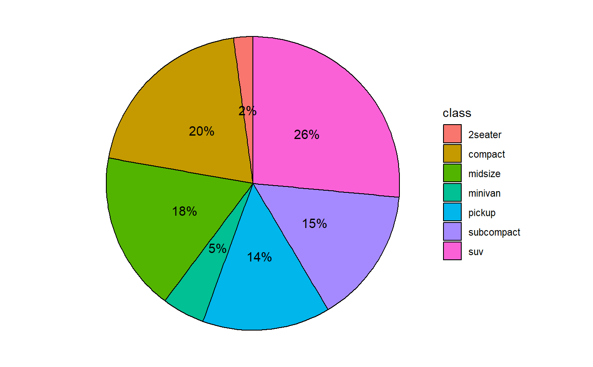
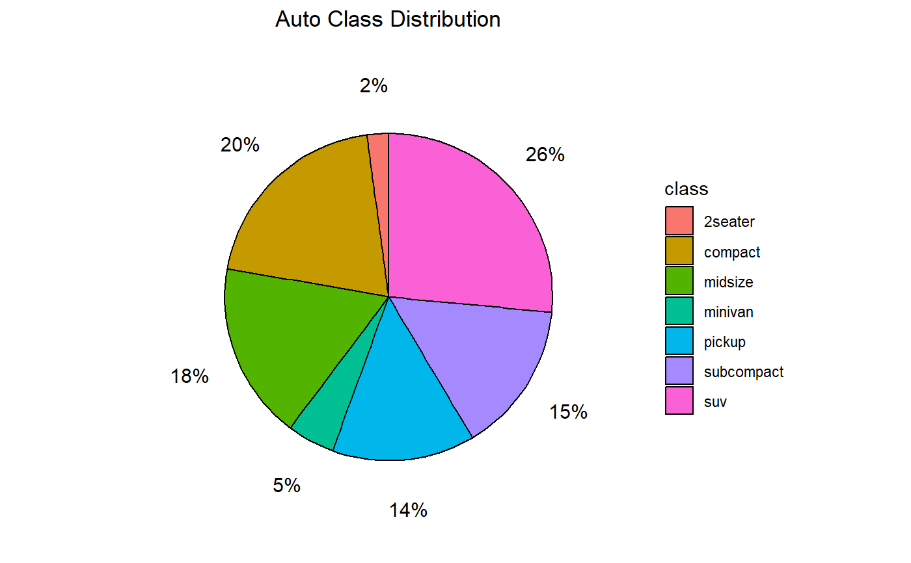
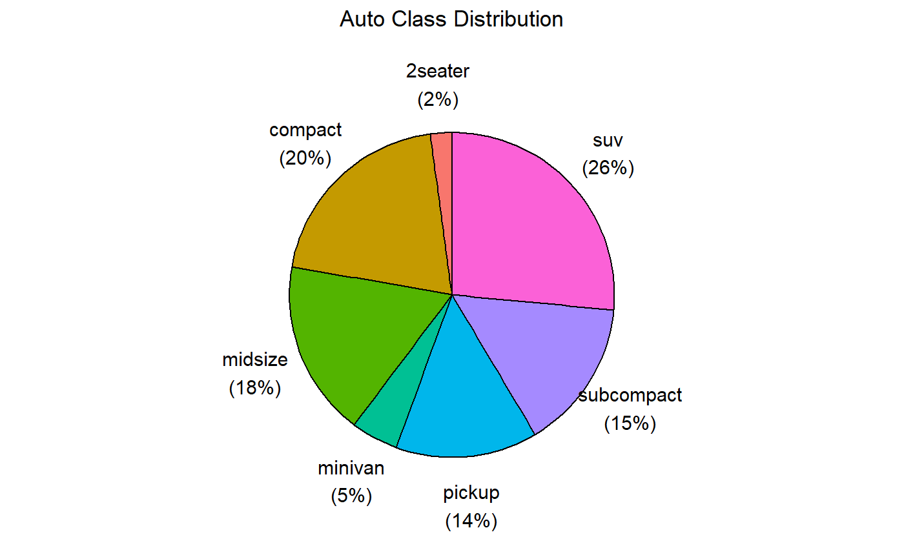
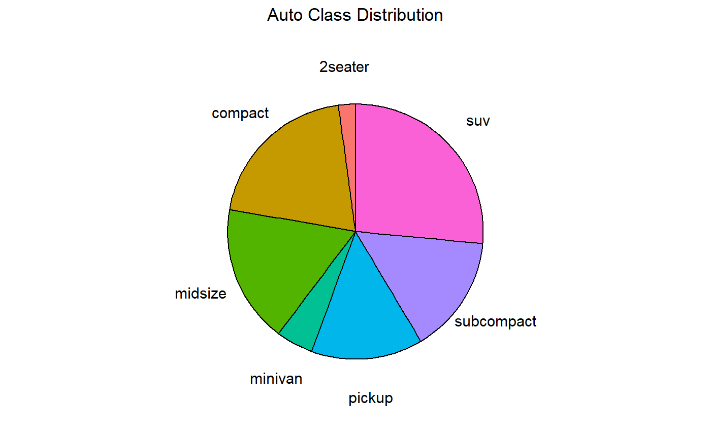
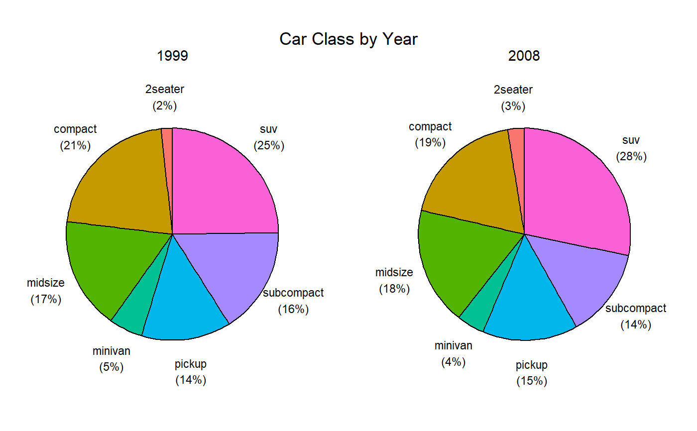
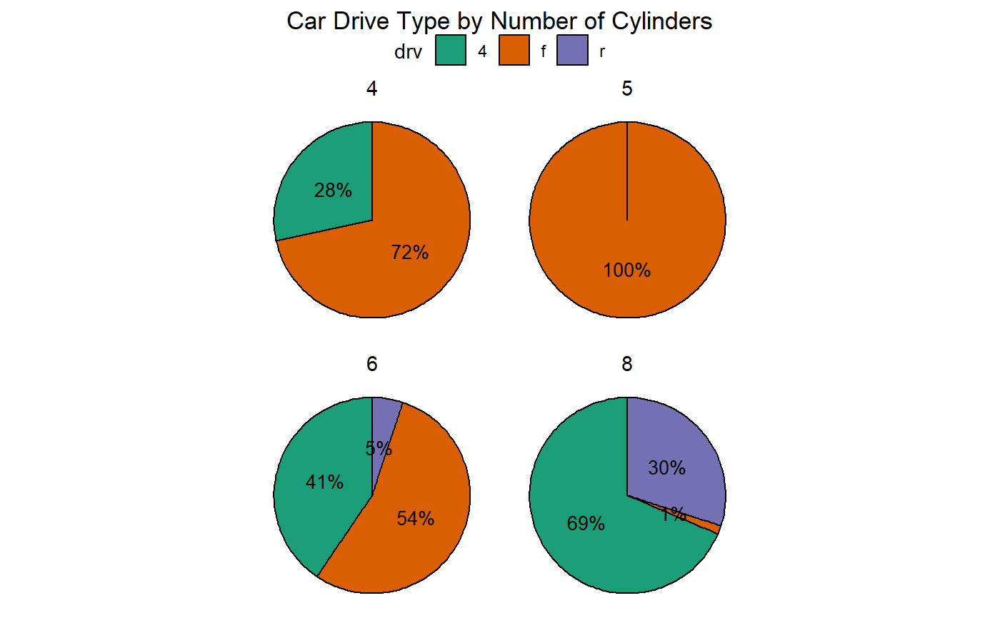
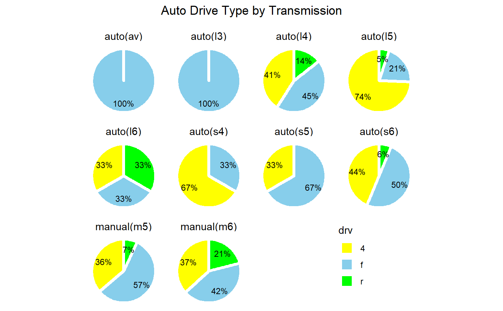

ggpie.RdCreates a single pie chart or several pie charts
ggpie(data, x, by, offset = 0.5, label.size = 4, label.color = "black", facet.label.size = 11, border.color = "black", border.width = 0.5, legend = TRUE, percent = TRUE, title, digits = 0, nrow = 1)
| data | A data frame. |
|---|---|
| x | The variable to be plotted. It will be coerced to a factor. |
| by | Optional "by" variable (see details). |
| offset | Distance of pie slice labels from the origin (see details). |
| label.size | Size of slice label text. |
| label.color | Color of slice label text. |
| facet.label.size | Size of the "by" variable labels. |
| border.color | Color of pie slice borders. |
| border.width | Width of pie slice borders. |
| legend | Logical. If TRUE, adds a legend. If FALSE, the legend is omitted and each pie slice is labeled. |
| percent | Logical. If TRUE, prints percents for each pie slice. |
| title | Optional title. |
| digits | Number of decimal digits when printing percents. |
| nrow | Number of rows for a faceted graph. |
a ggplot2 graph
If a by variable is present, a faceted graph is created with one pie chart for each
level of the by variable. The nrow option controls the number of rows
in the faceted chart. The facet.label.size
option controls the size of the facet label for each pie chart.
The offset value controls the distance of the pie slice label from the pie's origin.
A value of 0.5 will center the label in each slice. A value of 1.0 will place each label on the
pie radius. A value larger than 1.0 will place the label outside the pie slice. You may have to
vary this value to get the most attractive spacing.
ggpie(mpg, class, offset=0.8, label.color="white")ggpie(mpg, class, offset=1.3, title="Auto Class Distribution")ggpie(mpg, class, offset=1.3, legend=FALSE, title="Auto Class Distribution")ggpie(mpg, class, offset=1.3, percent=FALSE, legend=FALSE, title="Auto Class Distribution")ggpie(mpg, class, year, offset=1.3, label.size=3, legend=FALSE, title="Car Class by Year")ggpie(mpg, drv, cyl, nrow=2, label.size=3.5, title="Car Drive Type by Number of Cylinders") + scale_fill_brewer(palette="Dark2") + theme(legend.position = "top")ggpie(mpg, drv, trans, nrow=3, border.color="white", border.width=1.5, label.color="black", label.size=3, offset=.7, title="Auto Drive Type by Transmission\n") + theme(legend.position=c(.8, .2)) + scale_fill_manual(values=c("yellow", "skyblue", "green"))